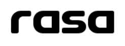

<nav class="navbar bg-body-tertiary">
    <div class="d-block container-fluid">
        
        <div class="d-flex justify-content-between align-items-center">

            <div>
                <!-- <a class="navbar-brand" href="#">RASA</a> -->
                <a class="navbar-brand link-logo" routerLink="/dashboard/inicio">
                    
                </a>
            </div>
    
            <div class="d-inline-flex gap-4">
                <span>{{mostrarRol}}</span>

                <a class="cerrar-sesion" routerLink="/login" (click)="cerrarSesion()">Cerrar sesión</a>
            </div>
        </div>
    </div>


  </nav>